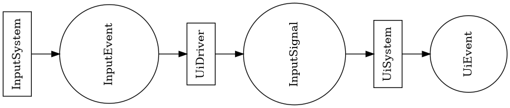
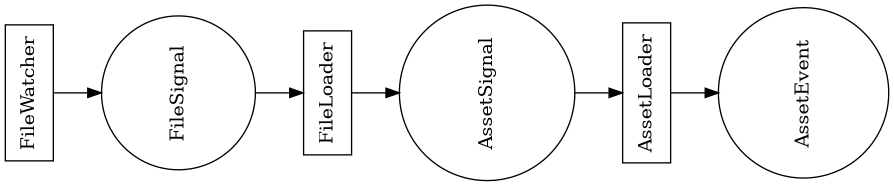
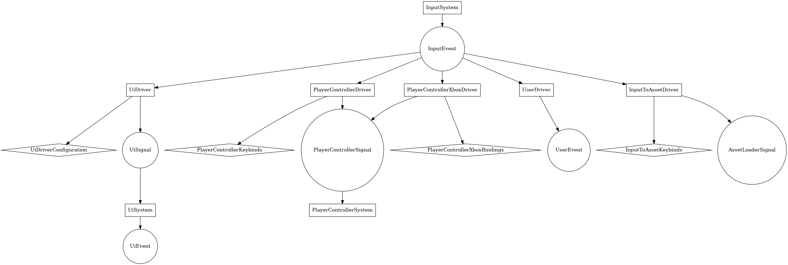

Event Chaining as a Decoupling Method in Entity-Component-System
Joël Lupien (Jojolepro, jojolepro@jojolepro.com)
https://patreon.com/jojolepro
================================================================================
Context
================================================================================
In game engines, we often have a lot of dependencies between modules.
For example, the user interface often depends on the renderer, window and
input systems.This means if we are not careful, we will end up with a
user interface that works only with a single type of input.When you add a
new input method (a controller for example), then you have to also edit the
user interface functionality to be able to use this new input device. What
is surprising however, is that not only do we need to change how input works,
but also we are modifying user interface code to add a device that... probably
does the same thing we are already doing.
This situation isn't unique to user interfaces. In fact, this is very often
how dependencies are modelled.It is intuitively what we think of when we
think of logical dependencies. A depends on B, thus A refers to B.As we
have just seen however, it can cause problems of maintainability, because
we have strong coupling.
Reducing Coupling
================================================================================
There are multiple ways to reduce coupling, depending on which paradigm
you use.Here, I will be specifically exposing a way to reduce coupling in
the context of an Entity Component System (ECS).
Fundamentals
================================================================================
First of all, let's see the building pieces that we have in a ECS.I will
be using terminology from the Amethyst Game Engine, since this is what I am
most familiar with.
Entities
--------------------------------------------------------------------------------
Entities are "units" of the game. Each player, item, user interface element,
audio source, etc.. are entities.We will not discuss much about entities
in this paper.
Components
--------------------------------------------------------------------------------
Components are properties of entities. Again, we will not be discussing those.
Resources
--------------------------------------------------------------------------------
Resources are simple data that is stored inside of the ECS' context.
Systems
--------------------------------------------------------------------------------
Systems are what drives the changes in the game. They are functions that
take data from the ECS context (resources and entity/components), perform
some computation and finally modify the ECS context.Systems can depend on
each other to sequentially perform computation. If they don't explicitly
depend on each other, they will be ordered automatically (and in parallel
when possible) in a more or less optimal ordering depending on how they use
resources or components (whether they read or write to them).If a system
writes to a resource or component, no other system can access this same
resource or component at the same time (in parallel).
Event Channels
--------------------------------------------------------------------------------
Single writer/Multiple readers FIFO queues. Most data types can be inserted
through those (they only need to be thread safe).You need a registered
instance of ReaderId to read from them. ReaderId instances can be created by
getting a mutable reference to an Event Channel and calling register_reader().
Additional Terminology
================================================================================
Let's introduce distinct names depending on how those previous concepts are
used to improve the clarity of this paper.
Driver
--------------------------------------------------------------------------------
A System used to "drive" the execution of another system, often through the
use of Signals.
Signal
--------------------------------------------------------------------------------
A Signal is simply an event written in an Event Channel that has for only
purpose to drive the execution of one or multiple Systems. If we look at it
the opposite way, some System will look for Signals as a way to know if and
what kind of work they need to do.
Event Chaining
================================================================================
What Are They?
--------------------------------------------------------------------------------
Very similar to the concept of message passing, event chains are a way to
communicate between Systems.Simply put, you have one event that is created,
which create a second event, which create a third event, which is then consumed
(received) by a System.
Compared to Message Passing.
--------------------------------------------------------------------------------
In traditional message passing, you often have some System A that sends a
message to System B.We say that System A is "aware" of System B's existence.
A way to decouple this is through the use of some method of broadcasting
the message to anyone who is registered to receive it. This is how mailing
lists work.
Here however, we don't have a list of who should receive each message. Instead,
each System that wants to receive the event has a ReaderId which it can use
to read from the Event Channel. The reason for this is so that we don't have
a single place where all of the message buffers are and where every system
tries to get a mutable reference (which would heavily reduce performance).
How They Solve The Coupling Problem
================================================================================
If we continue with the example from the beginning, we can see a way to make
the user interface unaware of the input system.
- The Input System creates input Events (MouseClicked, KeyboardPress,
ControllerPadLeft).
- A Driver (System) converts input Events into user interface Signals according
to a configuration structure stored as a Resource and other contextual Resources
(are we inserting text? selecting user interface elements? dragging something?)
- The User Interface System makes changes using a combination of
- Signals (Press(x,y), InsertCharacter(char), SelectLeft)
- ECS Entity and Components (Ui elements, like labels and text fields)
- Resources (ScreenSize, SelectedUIElements)
- The User Interface System creates Events based on the changes. For example,
UiEvent::Clicked(label1_entity).

Drawbacks
================================================================================
Of course, we have to talk about drawbacks. Let me preface this with
the following: There is a performance cost. It is small, but it is there.
If we take the last example, we would now have one more System running (the
UI Driver) and we would have to create the Signals for the User Interface
System. In addition, in almost all cases of a Driver being present, there
is a conversion step when converting events to signals, usually a HashMap
lookup or similar.
However, we surprisingly are also getting some performance gains from this. In
the last example, instead of the User Interface System looking each frame
for the status of the input device(s), we now have this System running only
when signals are present.
Other usages
================================================================================
We have seen how this concept of Event Chaining allows to decouple user
interfaces from input handling.Now, what else can we apply it to?Well... a
lot of things actually. Here are some examples:
Asset Hot Reloading
--------------------------------------------------------------------------------
- A FileWatcher System creates a signal when a file is updated on disk.
Watched files are configured through a resource, which could itself
be loaded from disk and hot reloaded.
- A FileLoader loads the file from disk (triggered by the signal) and converts
the data into a shared format. (RGBA for images, vector data for svg, vertices
for meshes, etc) A Signal is then sent (DataLoaded, DataUpdated, DataDestroyed).
- An AssetLoader picks up this signal and does some module specific action. For
example, loading or updating
a mesh into the GPU memory.
In addition to simplifying asset reloading by dividing it in steps, it now
also creates a way to notify system of data changes (a modified mesh) so that
they can update their internal states (GPU memory).This gives more power
to users, as they can now change data midway through without having to modify
the code of what depends on this data (the renderer's mesh to gpu loader).

Audio Processing
--------------------------------------------------------------------------------
- As described in the previous point, we have a system that can load files
(including audio) and
store them in a shared format.
- We have a AudioPlayer Driver which will create Signals as time passes with
audio data to play. For performance reasons, we can use references or indexes
to the audio data instead of copying the data into the Signal.
(AudioPlay{audio_data, from_point, speed})
- We have a AudioSink System that forwards the corresponding audio data into
a raw audio sink.
Additional Benefit: Configurability
================================================================================
In this paper, I mentioned that Drivers can use configuration and context data
from ECS Resources.This allows for a super easy way to configure complex
behaviors. Let's take input as an example. The Input System creates raw
events. The Driver converts those into signals (or events) for other systems
to use. Let's see how we can use multiple Drivers to create complex behaviors.
- UIDriver: Converts input Events into UI Signals.
- UserDriver: Converts input Events to User-Defined Events. (KP_Escape ->
UserEvent::PauseGame)
- PlayerControllerDriver: Converts input Events to Player Movement
Signals. (KP_Left -> Move::Left)
- InputToAssetDriver: Converts input Events to FileLoader Signals. (KP_R ->
FileUpdated(fun_file.jpg))
- WtfDriver: Converts input Events to ResolveWorldHunger Signals. (KP_P ->
Please::SolveIt)
As you can see, lots of Drivers are possible.Now we have two choices. Either
the Drivers decide based on the context if they should create the signals
OR they always create the signals according to their configuration.In the
second case, the configurations can be changed by other Systems or by external
code, depending on your preference.Personally, I find the second option
more versatile, as it is rare that the Drivers can be made context aware in
a way that fits all use cases.In this case, it is possible to have code
that, for example, disables the UiDriver when the player is controlling
their character, saving both performance and code complexity.

Conclusion
================================================================================
In conclusion, Event Chains are a powerful and versatile tool to decouple
logical dependencies between Systems. They add a bit of complexity and
performance overhead, but they are well worth their cost in the context of
a general game engine.
General Recommendations
================================================================================
For those who already worked with something similar to EventChannel and
ReaderId, you might have noticed that there are issues when a System that
consume Signals is paused. When this happens, the System stops consuming
the Signals and they stay in memory forever, causing memory leaks. The
solution for this is to store the System's ReaderId inside of a Resource
and to nullify/destroy it when the System gets paused.
Testing! You can test Systems in isolation by manually sending Signals.
Take advantage of this and test <3
Use generics! Drivers almost always do the same job: Convert one event type
into another event (or signal) type by using a table or HashMap.This means
that using generics to specify the input and output types as well as the
HashMap key and value types, creating Drivers can be done in a single line.
Document as much as possible the Systems. Since we have System and Driver
which are both Systems and Event and Signal which are both Events, it can
be quite confusing without the proper documentation to understand the role
of each piece of the puzzle.
Here are some ideas of what to document:
- The configuration resources of each System.
- The events that each System creates.
- The signals that each System consumes.
Supporting Me
================================================================================
I released this for free/without limitations because I want to contribute
to the greater good.
If you like the work I do, please consider donating on Patreon:
https://patreon.com/jojolepro
Or by Bitcoin:
15NDruDUDr3KaMjt87BvUJaayEzy5c765Z